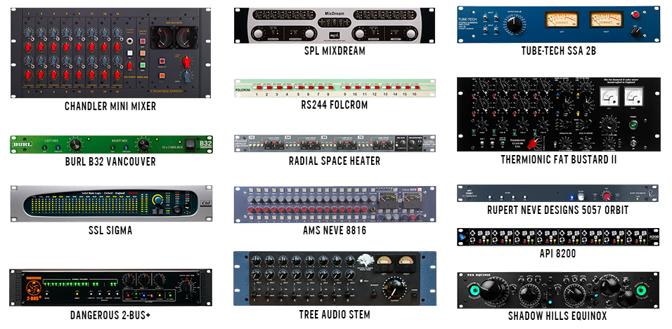

T
he central components of any hybrid setup are the converters and the analog summing mixers. These essential pieces of equipment not only impart a unique color onto the sounds that pass through them, but they can reshape your workflow significantly as well. Some engineers opt to sum their mixes in the box and send the stereo bus out for a little analog warmth. Other engineers choose to sum in the analog domain, adding some additional DSP processing afterwards. Some even go all the way, using a complex network of hardware inserts, summing mixers, tape machines and plugins to bring the final mix together. All of these processes are equally valid, but each one yields a unique sonic result.
While good quality converters are universally agreed to be essential to any studio, the summing box is a little more contentious. The popularization of dedicated summing mixers can be traced back to the early stages of digital recording. By the mid 2000s, almost all commercial studios had transitioned to using digital audio workstations, and plugins had become an essential part of modern music production. But many engineers had a hard time adapting to mixing in the box. They felt that internal DSP summing created mixes that sounded inferior to those done on a console. Equipment manufacturers started producing rack-mountable summing mixers to meet this new demand, and to bridge the gap between the analog and digital worlds.
A VARIETY OF SUMMING MIXERS
Almost two decades later, the landscape has changed significantly. The headroom of digital audio workstations has expanded, and the sound quality of plugins has developed significantly. These days it would take a well-trained ear to reliably tell the difference between digital and analog summing in terms of fidelity. In the hands of the right engineer, both tools can yield phenomenal results. In fact, computers have become so powerful that software developers have begun to emulate the sound of classic summing mixers such as Neve and API. We are rapidly heading towards a world where high-fidelity audio is easily accessible, but where character, tone and creativity are what drive the culture forward. Adopting a hybrid mixing workflow can still give an edge in this regard. Research indicates that using physical tools can foster more creative thinking, and the unique tones that these tools offer can give your mixes an original sound and quality that is difficult to match.
Designing your own hybrid mixing set-up is like solving a puzzle; it takes time to find the right pieces that fit your workflow. We reached out to five award-winning mixers to get an inside look at their hybrid mixing set-ups, in order to learn more about what tools they are using and how they all interact.
M
SM’s workflow is best described as efficient and open-minded. His ProTools template has been carefully designed and routed to create both digital and analog-summed mixes in real-time. Both of these signal paths have been calibrated and gain-matched, allowing him to A/B the two mixes seamlessly.
When A/B-ing, MSM uses plugin emulations of his hardware to match the signal chains as closely as possible. If he uses the Curve Bender on the mix bus, he will insert the equivalent emulation by Brainworx and ensure that their parameters match. This enables him to make much more objective choices.
"I’ll mimic the settings in the box so that everything is fair and we are not just picking the hardware for the sake of it. Sometimes I have gone between the two, and the in-the-box mix is the one I’ve ended up with."
"I’m not someone who thinks that summing in analog is inherently better. I have done amazing in-the-box mixes. Sometimes when I go analog, it just doesn’t work. Something gets a bit too soft. Something happens to the transients and the energy is gone. I could go in and tweak it, but I’m mixing all day every day. I want to know what each box sounds like. I want to turn it on and off and say ‘does this benefit?’. If the answer is no, we move on."
"I am like that with converters too. I have a few A/D converters, and towards the end of the mix I’ll flip between them. I look at it like filters on a picture. You’ve already taken the picture, but afterwards you might like it better with a filter on. A lot of people think that this is not the right way to work, and that you should mix through the converters and stay in one specific box. I disagree."
The central piece of equipment in MSM’s set-up is his SPL Hermes, a routing mixer that streamlines his workflow and allows him to recall and experiment with different analog chains without a single patch cable.
"I can save these presets and chains, and I can compare them in different orders. It lets me have fun with analog, and it gives me more reasons to buy more things and play around. Without this, summing becomes less fun and more of a task. You have to recall it and remember all the patching. With the Hermes, I don’t have to think about that stuff anymore."